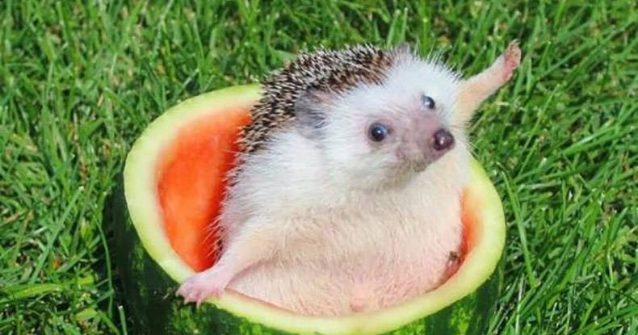

Na tej podstronie znajdują się wybrane wiersze o jeżykach.

Jeż, który zaspał
Na czubku sosny rozsiadł się szczygieł
I tak wydziwiał: „O, ile igieł!
Jak dużo igieł! Cóż to za wygląd?
Szkoda, że nie ma tu moich szczygląt,
Uśmiałyby się do łez na pewno
Widząc igłami pokryte drewno”.
Odrzekła sosna: „Nie dotkniesz nas tym.
Sosna jest przecież drzewem iglastym;
Każde iglaste drzewo ma igły,
A to dla szczygłów twór niedościgły”.
Część tej rozmowy podsłuchał jeż,
Pomyślał sobie: „Mam igły też,
Innymi słowy, jestem iglasty”.
Podreptał szybko przez mchy i chwasty
Wołając: „Patrzcie, igły mi rosną,
Nie chcę być jeżem, stanę się sosną!
Już wiem, co zrobię: pobiegnę w puszczę
I tam korzenie w ziemię zapuszczę”.
Niebawem w lesie zaczął ryć norę
W głąb gdzie sięgają korzenie spore,
Lecz gdy się zarył po czubek głowy,
Ziewnął i zapadł w swój sen zimowy.
Spał, aż się wreszcie zbudził na wiosnę.
Pomyślał: „Pewno wysoko rosnę…”
Wyszedł odetchnąć powietrzem świeżym,
A szczygieł szydzi: „Furt jesteś jeżem,
Jeżem - nie sosną! Zaspałeś trochę…
Jeśli chcesz piąć się, to nie bądź śpiochem”.
Jeż
Idzie jeż, idzie jeż,
Może ciebie pokłuć też!
Pyta wróbel: „Panie jeżu,
Co to pan ma na kołnierzu?”
„Mam ja igły, ostre igły,
Bo mnie wróble nie ostrzygły!”
Idzie jeż, idzie jeż,
Może ciebie pokłuć też!
Zoczył jeża młody szczygieł:
„Po co panu tyle igieł?”
„Mam ja igły, ostre igły,
Żeby kłuć niegrzeczne szczygły!”
Sroka też ma kłopot świeży:
„Po co pan się tak najeżył?”
„Mam ja igły, ostre igły,
Będę z igieł robił widły!”
Wzięła sroka nogi za pas:
„Tyle wideł! Taki zapas!”
W dziesięć chwil już była na wsi:
„Ludzie moi najłaskawsi,
Otwierajcie drzwi sosnowe,
Dostaniecie widły nowe!”
z Moszczonek
Jerzy i jeże
Jerzy stoi i nie wierzy,
że na wieży jest gniazdo
jeży, i sto jeżozwierzy.
Dorota Gellner
Kolczasty jeżyk
To jest jeżyk.
Mały jeżyk.
Jeżyk z kolców ma kołnierzyk.
Z kolców płaszczyk,
z kolców szalik,
tylko nosek jak koralik
O zielonym jeżu
Pod kasztanem w gęstej trawie,
usnął jeżyk po zabawie.
Właśnie zbudził się i ziewał,
Gdy coś nagle spadło z drzewa,
Za nim drugie, trzecie też...
Miało kolce tak jak jeż.
Spojrzał jeżyk w bok uskoczył,
Przerażony przetarł oczy.
-Patrzę, patrzę i nie wierzę:
czy to jeże, czy nie jeże?
Nie wiedziałem dotąd sam,
Że zielonych braci mam.
Lecz ja w norce mam mieszkanie, a gdzie one? Na kasztanie!

Kontakt:
Maksymilian Bazan
ul. Podwisłocze 26/116
35-309 Rzeszów
tel. 733 812 345
bajeranckie.jezyki@gmail.com